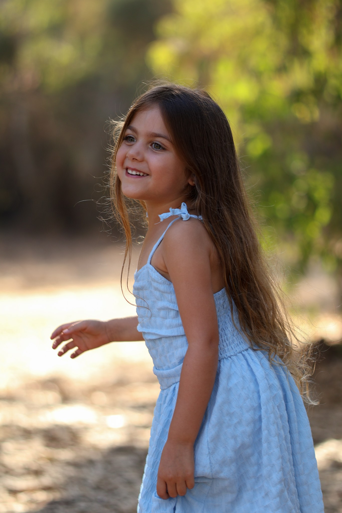

MooshMoosh.אנשים ורגעים
משפחה. היריון. זוגיות. אתם.הרגע עובר.
הרגע עובר.
התחושה נשארת.
צילומי סטילס עם מקום להיות
בדיוק מי שאתם.

01
קלאסי חם
הכיוון הראשוןשנהב וזית, צילום גדול וטיפוגרפיה רכה. אישי, רגוע ומדויק — עם תחושה של אלבום שנשאר.
לצפייה באתר המלא